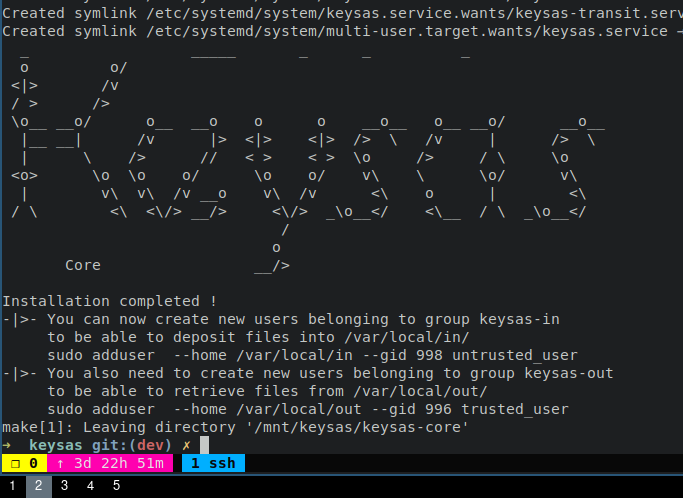

Installation
The following installation steps will guide you through compiling Keysas from sources and installing it on a Debian 12 (Bookworm) system.
Software dependencies
To compile Keysas from sources, let’s start by installing the required dependencies:
Dependencies installation
$ sudo echo "deb http://deb.debian.org/debian bookworm-backports main contrib non-free" > /etc/apt/sources.list.d/backports.list
$ sudo apt update
$ apt -qy install -y libyara-dev libyara9 wget cmake make \
lsb-release software-properties-common \
libseccomp-dev clamav-daemon clamav-freshclam \
pkg-config git acl rsync bash libudev-dev \
libwebkit2gtk-4.0-dev build-essential curl \
wget libssl-dev apparmor ssh libgtk-3-dev \
libayatana-appindicator3-dev librsvg2-dev
# Install rustup
$ curl --proto '=https' --tlsv1.2 -sSf https://sh.rustup.rs | sh
# Install the LLVM toolchain
$ bash -c "$(wget -O - https://apt.llvm.org/llvm.sh)"
# Install the nightly rust toolchain
$ curl https://sh.rustup.rs -sSf | sh -s -- --default-toolchain nightly -y
$ rustup default nightly
Getting Keysas
A pre-compiled Keysas binary for x86_64 architecture is at your
disposal. We recommend using the latest version here:
https://github.com/keysas-fr/keysas/releases
- Download the following files of lastest stable version.
keysas-vx.y.z.-x86_64.zip
keysas-vx.y.z.-x86_64.zip.sha256
Verify the sha256sum and compare it to the keysas-vx.y.z.zip.sha256 file:
$ diff <(sha256sum keysas-vx.y.z.zip) keysas-vx.y.z.zip.sha256
$ unzip keysas-vx.y.z.zip -d keysas
Warning
Ensure that /usr/sbin is present in your $PATH. If not, add it:
$ export PATH=$PATH:/usr/sbin
For a source based installation
Clone the gitlab repository and compile Keysas
$ git clone --depth=1 https://github.com/keysas-fr/keysas.git
$ cd keysas
$ make build
Clamav configuration
Keysas uses Clamav as a virus scanner for now but additionnal scanners could be added in future. You should update your Clamav signature database on regular bases. This operation is handled by the clamav-freshclam daemon, you have to enable it.
Make sure that your clamav-daemon and clamav-freshclam services are up and running
$ systemctl status clamav-daemon clamav-freshclam
Edit the Clamav configuration
Enable TCP listening on the loopback interface using port 3310
#/etc/clamav/clamd.conf
TCPSocket 3310
TCPAddr 127.0.0.1
Warning
Make sure that the StreamMaxLength (clamd.conf) parameter is consistent with MAX_SIZE and YARA_MAXFILESIZE (see keysas-transit).
We now need to allow the Clamav daemon to be able to read the /var/local/in directory with Apparmor.
Clamav apparmor profile tweak
The following Clamav apparmor rules are used to authorise Clamd scanning the entry SAS:
#/etc/apparmor.d/local/usr.sbin.clamd
/var/local/in/ r,
/var/local/in/* kr,
/var/local/in/** kr,
It should be automatically installed during installation.
You can now manually run a signature database update and restart the Clamav daemon to take the new configurations in account.
$ sudo systemctl start clamav-freshclam
$ sudo systemctl restart clamav-daemon
System wide installation
You can now install Keysas-core on your system.
$ cd keysas
$ sudo make install-core
$ sudo make install-yararules
To install the Full USB version of Keysas (decontamination station):
$ cd keysas
$ sudo make install
$ sudo make install-yararules
False positive detection by Yara rules
Some Yara rules (for example the Big_numbers* series) may give repeated false positives on some document types. If you want to remove them, you’ll have to locate them in /usr/share/keysas/rules, commenting them out and running the index_gen.sh script.
At the end of the installation, you should see something like this:
Installation details
Every binaries (ELF) are installed under /usr/bin/ ;
Systemd units are installed under /etc/systemd/system/ ;
Apparmor profiles are installed under /etc/apparmor.d/ ;
Configuration files are installed under /etc/keysas/ ;
Logs are available using journalctl ;
Yara rules are installed under /usr/share/keysas/rules.
You can now check that every services are up and running (core mode):
$ systemctl status keysas keysas-in keysas-transit keysas-out
If you want to check the full installation (USB mode):
$ systemctl status keysas keysas-in keysas-transit keysas-out keysas-io keysas-backend
Cross compiling for RPi4
If you don’t have a RPi4 with all the needed dependencies at hand, you may try to cross compile via docker and qemu via multiarch/qemu-user-static.
Create the following Dockerfile:
FROM rust:latest
RUN apt-get update && apt-get install --assume-yes --no-install-recommends \
libatk1.0-dev:arm64 libglib2.0-dev:arm64 libcairo-5c-dev:arm64 \
libpango1.0-dev:arm64 libgtk-3-dev:arm64 libsoup-3.0-dev:arm64 \
libjavascriptcoregtk-4.1-dev:arm64 libudev-dev:arm64 \
libwebkit2gtk-4.1-dev:arm64
RUN apt-get install --assume-yes --no-install-recommends \
libclang-dev:arm64 cmake:arm64 libyara-dev:arm64 libseccomp-dev:arm64
RUN rustup toolchain install --force-non-host nightly-aarch64-unknown-linux-gnu
WORKDIR /app
CMD ["cargo", "+nightly","build", "--target", "aarch64-unknown-linux-gnu", \
"--workspace", "--exclude", "keysas-admin", "--release" ]
Allow docker to build via qemu:
$ docker run --rm --privileged multiarch/qemu-user-static --reset -p yes
Build and run the docker image:
$ docker build --platform=linux/arm64/v8 . -t keysas-build/aarch64
$ docker run --platform=linux/arm64/v8 --rm -it -v "$PWD:/app" keysas-build/aarch64
The resulting files will be in the target/release directory.
Until the rust image is migrated to debian 13, you will see some errors when
compiling the yara crate, You need to downgrade it to 0.29.0 (see
related issue
comment).
Building Keysas-frontend
Keysas-frontend is a read-only Vue-JS application to help visualizing transfers for the end-user.
Go to the keysas-frontend directory and install the dependencies using npm:
$ npm i
One done, you can build the application:
$ npm run build
The application is now built into the dist directory. Copy the content of this directory at the root of a local webserver (like nginx for exemple). Open now a web browser like firefox and visit the http://127.0.0.1
Building Keysas-admin
Keysas-admin requires nvm to be installed to install node and npm. Please refer to the nvm documentation for installation instructions.
For keysas-admin, you need npm version 18:
$ nvm install 18
$ nvm use 18
Then, you can build the application using the following command: Nevertheless, if you want to build it yourself for testing purposes:
$ cd keysas-admin
$ npm i vite@latest
$ cargo install tauri-cli --version "^2.0.0" --locked
$ cargo tauri build
Warning
Keysas-admin only work on GNU/Linux based systems for now !